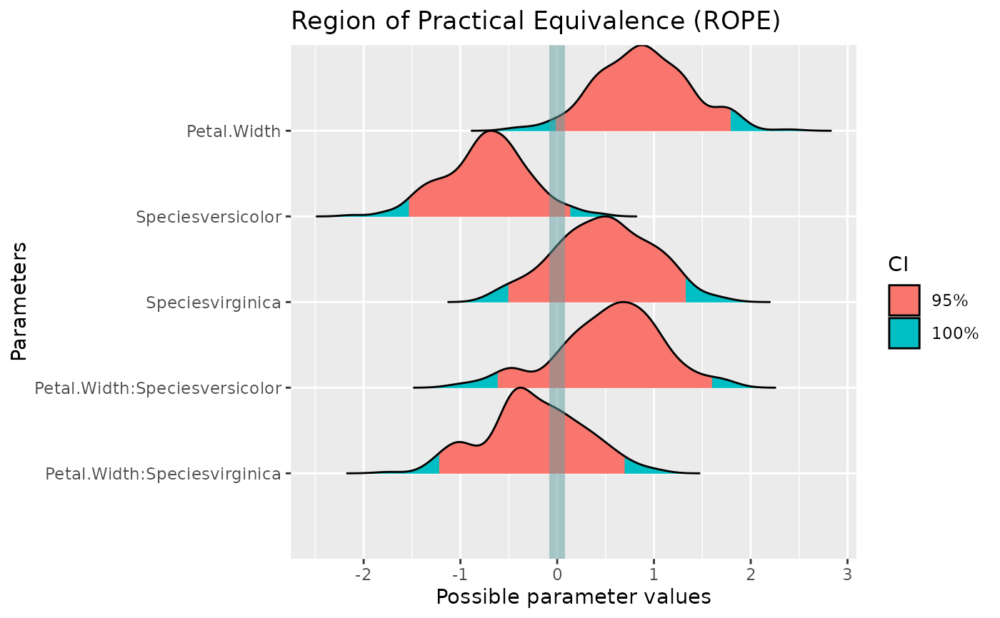
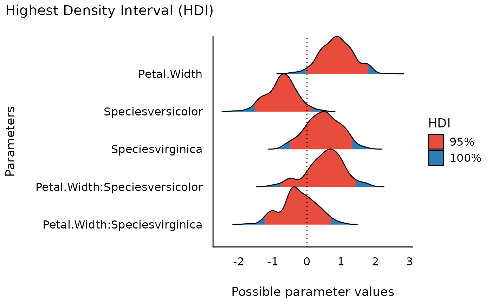
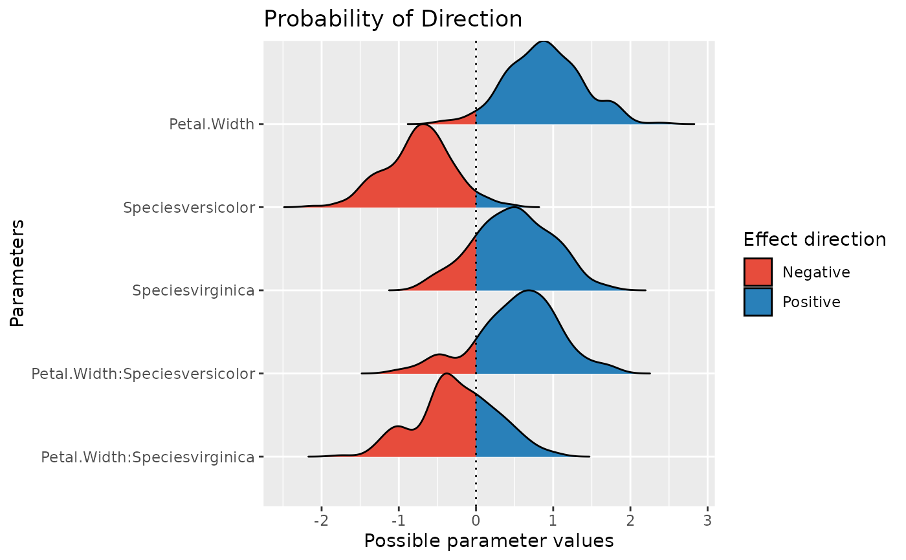
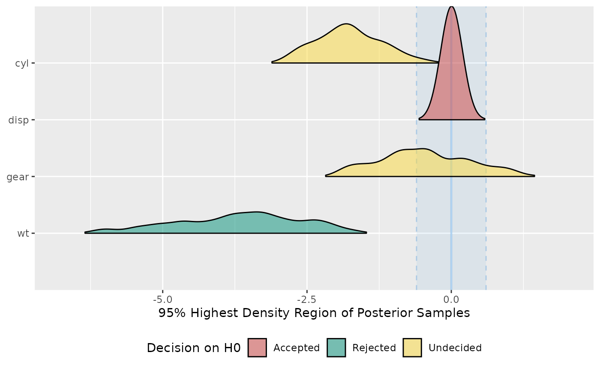

Prepare objects for plotting or plot objects
Source:R/data_plot.R, R/plot.compare_performance.R
data_plot.Rddata_plot() extracts and transforms an object for plotting,
while plot() visualizes results of functions from different packages in
easystats-project. See the documentation
for your object's class:
Details
data_plot() is in most situation not needed when the purpose
is plotting, since most plot()-functions in see internally call
data_plot() to prepare the data for plotting.
Many plot()-functions have a data-argument that is needed when
the data or model for plotting can't be retrieved via data_plot(). In
such cases, plot() gives an error and asks for providing data or models.
Most plot()-functions work out-of-the-box, i.e. you don't need to do much
more than calling plot(<object>) (see 'Examples'). Some plot-functions
allow to specify arguments to modify the transparency or color of geoms,
these are shown in the 'Usage' section.
Examples
library(bayestestR)
library(rstanarm)
model <<- suppressWarnings(stan_glm(
Sepal.Length ~ Petal.Width * Species,
data = iris,
chains = 2, iter = 200, refresh = 0
))
x <- rope(model, verbose = FALSE)
plot(x)

x <- hdi(model)
plot(x) + theme_modern()

x <- p_direction(model, verbose = FALSE)
plot(x)

model <<- suppressWarnings(stan_glm(
mpg ~ wt + gear + cyl + disp,
chains = 2,
iter = 200,
refresh = 0,
data = mtcars
))
x <- equivalence_test(model, verbose = FALSE)
plot(x)
#> Picking joint bandwidth of 0.189
